，但是没有
，但是没有  或
或  。这是丢番图面临的一个主要困难，因为他的著作中大部分内容与不定方程有关（高斯误称丢番图的著作研究的全都是不定方程）。这需要简单解释一下。
。这是丢番图面临的一个主要困难，因为他的著作中大部分内容与不定方程有关（高斯误称丢番图的著作研究的全都是不定方程）。这需要简单解释一下。我们接着要说古埃及。“代数之父”丢番图 1 生活在公元 1 世纪、2 世纪或 3 世纪的古罗马帝国统治下的古埃及亚历山大城，为了纪念他，本章以他的荣誉称号作为标题。
1丢番图把自己的名字写成希腊文的形式“Diophantos”。欧洲人是通过拉丁文译本来了解他的著作的，因此他的拉丁文名字“Diophantus”沿用至今。
丢番图到底是不是代数之父，这正是律师所谓的“难以决定的问题”。一些非常受人尊敬的数学史学家都否认这一点。比如，在《科学传记大辞典》中，库尔特·沃格尔认为丢番图的工作并不比古巴比伦人和阿基米德（公元前 3 世纪，见下文）的工作更代数化，并得出结论：“丢番图肯定不是人们通常称的代数之父。”范德瓦尔登把代数的起源向后推迟了一段时间，他认为数学家花拉子密（780—850）才是代数之父。花拉子密比丢番图晚 600 年，我们将在第 3 章介绍他。此外，现在的本科生所学的被称为“丢番图分析”的数学分支通常作为数论课程的一部分，而不在代数课程里讲授。
下面我将讲述丢番图的工作，并对此提出我自己的观点，你们可以做出自己的判断。
※※※
在公元前 141 年美索不达米亚整个地区被帕提亚人征服之前，美索不达米亚人在持续了几个世纪的种族和政治纷争中一直使用楔形文字进行书写。人们今天还保留着这次征服之前用楔形文字书写的数学文献。在汉谟拉比帝国和美索不达米亚被帕提亚人征服的 1500 年间，人们在数学字母符号体系、技术和认知方面几乎没有任何进步，这得到了研究过该课题的每一位学者的证实，这是一件令人惊讶的事情。研究过楔形文字的数学家约翰·康威（1937— 2020）说，从泥板来看，唯一的差异就是最新的泥板中有“占位零”的标记，即一种可以区分如“281”和“2801”的方法。古埃及同美索不达米亚一样，没有任何证据表明古埃及数学从公元前 16 世纪到公元前 4 世纪取得了显著的进步。
尽管古巴比伦和古埃及的数学家们在自己的祖国没有取得什么进步，但是他们早期的辉煌成果已经传遍了古代西方，甚至可能传得更远。事实上，从公元前 6 世纪开始，古代世界的代数故事就是一段古希腊故事。
※※※
在丢番图之前，古希腊数学主要研究几何，这是古希腊数学的特点。对此，通常给出的理由在我看来颇有一番道理，这个理由是毕达哥拉斯学派（公元前 6 世纪晚期）信奉可以在数的基础上建立数学、音乐和天文学的观点，但是无理数的发现困扰着毕达哥拉斯学派，所以他们将兴趣从算术转向几何，因为算术中似乎包含一些无法描述的数，但这样的数在几何中却可以准确无误地用线段的长度来表示。
因此，早期的古希腊代数概念都是用几何形式表示的，通常晦涩难懂。比如，巴什马科娃和斯米尔诺娃指出，欧几里得的伟大著作《几何原本》第 6 卷的命题 28 和命题 29 给出了二次方程的求解方法。我认为它们确实给出了二次方程的求解方法，但至少在第一次阅读时，这种方法并不容易被发现。下面是托马斯·希思爵士（1861—1940）翻译的欧几里得《几何原本》第六卷的命题 28：
在已知线段上作一个等于已知直线形的平行四边形，它是由取掉了相似于某个已知图形的平行四边形而成的：这个已知直线形必须不大于在原线段一半上的平行四边形，并且这个平行四边形相似于取掉的图形。2
2这段译文引用自兰纪正、朱恩宽翻译的《欧几里得几何原本》，陕西科学技术出版社，2003 年。——译者注
你看懂了吗？巴什马科娃和斯米尔诺娃说，这段话等价于求解二次方程
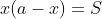
。我赞同她们的理解。欧几里得生活在亚历山大托勒密将军（即托勒密一世，在位时间是公元前 306 年到公元前 283 年）统治下的亚历山大城（图 2-1、图 2-2），当时的亚历山大城和古埃及的其他城市都在托勒密一世的统治下。欧几里得在亚历山大城创办了学校，开始传道解惑。在欧几里得出生前不久，亚历山大在尼罗河三角洲的西岸建立了亚历山大城，它与古希腊隔着地中海遥遥相望。人们认为欧几里得在古埃及定居之前曾经在雅典的柏拉图学院接受过数学训练。不管怎样，公元前 3 世纪的亚历山大城是卓越的数学中心，比古希腊更重要。
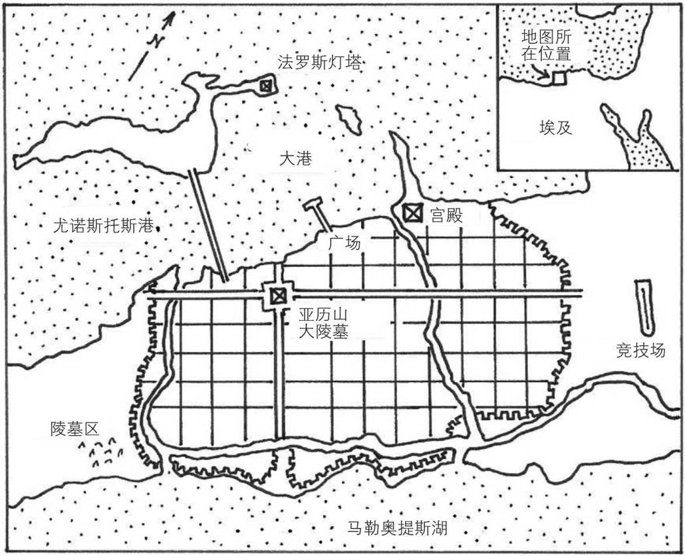
图 2-1 古亚历山大城。法罗斯灯塔曾是著名的灯塔，它是古代世界七大奇迹之一，在 7 世纪到 14 世纪的一系列地震中被摧毁。人们认为大图书馆就在这个城市东北方的宫殿附近。锯齿形线条表示原来的城墙（公元前 331 年）
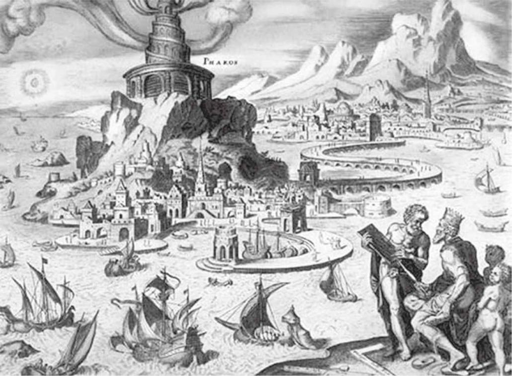
图 2-2 亚历山大城的法罗斯灯塔，这是马丁·海姆斯凯克（1498—1574）根据想象绘制的
阿基米德比欧几里得年轻 40 多岁，他很可能曾在亚历山大城的欧几里得的继任者的指导下学习，仍然学习几何方法，尽管他把几何方法应用在更复杂的领域中。比如，他的著作《论圆锥体和椭球体》探讨的就是平面与一种复杂的二维曲面的交线。这部著作清晰地表明，阿基米德可以求解某些特定类型的三次方程，就像欧几里得可以求解一些二次方程一样，但是，阿基米德使用的语言全部都是几何语言。
※※※
公元前 3 世纪的辉煌时期过后，亚历山大学派的数学开始衰落。到了混乱的公元前 1 世纪（想想安东尼和“埃及艳后”克利奥帕特拉的故事），亚历山大学派的数学似乎消失殆尽。随着早期罗马帝国稳定之后，数学有了一定程度的复兴，同时也出现了脱离纯几何的思维转变。丢番图就在这个新时期生活和工作。
正如本章开始时所说的，关于丢番图，我们几乎一无所知，甚至不知道他生活在哪个世纪。最流行的猜测是公元 3 世纪，经常被引用的时期是公元 200 年到 284 年。我们注意到丢番图，是因为他写了一部题为《算术》的著作，这部著作只有不到一半流传到现在。现存的主要部分包括 189 个问题，其目标是寻找满足一定条件的一个数或一组数。在这部著作的引言里，丢番图概述了他的字母符号体系和方法。
在我们看来，他的字母符号体系相当原始，但在当时已经非常精致了。我们用一个例子来说明。下面是一个现代形式的方程：
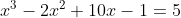
丢番图把它写成下面的形式：
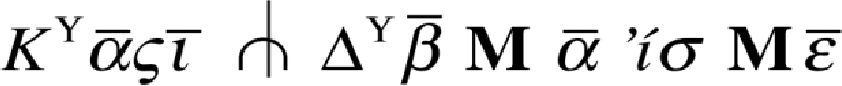
这里最容易辨认的就是数。丢番图使用希腊字母体系来书写数，其做法是采用希腊字母表中的 24 个普通字母，再加上 3 个过时不用的字母，一共 27 个字母。把这些字母分成 3 组，每组有 9 个字母。扩充字母表的第一组中的 9 个字母代表 1 到 9 的个位数字，第二组中的 9 个字母代表 10 到 99 的十位数字，第三组中的 9 个字母代表从 100 到 999 的百位数字。古希腊人没有代表 0 的符号，当时世界上的其他人也没有代表 0 的符号。3
3例如，“
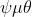
”表示 749。用作单位的字母可以再被利用来表示几千，例如，“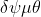
”的意思是 4749。 通常代表 4，在这里代表 4000。对于超过 9999 的数，数字被分成 4 个一组，用“M”（代表 Myriad，意为“无数的”）或丢番图的点记号分开。例如，“
通常代表 4，在这里代表 4000。对于超过 9999 的数，数字被分成 4 个一组，用“M”（代表 Myriad，意为“无数的”）或丢番图的点记号分开。例如，“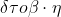
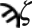
”代表 43 728 907。（看起来有点儿奇怪的字母“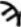
”已经被废除，在这里用来表示 900。因为“”代表 7，所以“ ”表示 907。注意这里没有占位的 0，因为这种方法不需要 0。）
”表示 907。注意这里没有占位的 0，因为这种方法不需要 0。）
所以，在前面给出的方程中， 代表 1， 代表 2， 代表 10， 代表 5（字母上面的横线表示用这些字母来代表数）。
在其他符号中，
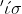
是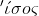
的缩写，意思是“等于”。注意，这里的字母上面没有横线，它们是用来拼写单词（实际上是单词的缩写）的字母，而不代表数。倒三叉戟符号 代表减去它之后到“等于”号之前的东西。还剩下 4 个符号需要解释：
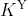
、、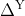
和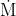
。第二个符号 代表未知量，相当于现代的。其他符号都代表这个未知量的幂： 代表三次幂（来自希腊语“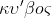
”，意思是立方）， 代表平方（来自希腊语“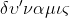
”，意思是“力量”或“幂”）， 表示零次幂，也就是今天我们说的“常数项”。知道这些含义之后，我们就可以对丢番图的方程逐字翻译如下：
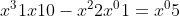
如果加上省略的加号和某些括号，那么这个方程的意思就更清楚了：
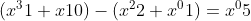
由于丢番图把系数写在变量后面，而不像我们那样把系数写在变量前面（我们写成 ，他写成
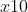
），而且因为任何非零数的零次幂都是 1，所以这个方程等价于我最初写成的那个形式：从这个例子可以看出，丢番图已经有相当精巧的代数记法。我们不清楚其中有多少符号是他原创的。使用特殊符号表示未知量的平方和立方可能是丢番图的发明，然而用 表示未知量的方法可能是他从一位更早的作者那里学来的，这位作者是收藏于美国密歇根大学的《密歇根纸草书 620》的作者。4
4在这种用法中，希腊字母 的头顶有一道横线，我没有写成那样。《密歇根纸草书》可追溯到公元 2 世纪早期，要比普遍认可的丢番图生活的时代早一个世纪左右。
丢番图的字母符号体系也有一些缺点，其中主要的缺点是它不能表示两个以上的未知量。用现代术语来说，这个字母符号体系虽然有 ，但是没有 或 。这是丢番图面临的一个主要困难，因为他的著作中大部分内容与不定方程有关（高斯误称丢番图的著作研究的全都是不定方程）。这需要简单解释一下。
※※※
数学家使用“方程”来表示某种东西等于另外一种东西。比如“二加二等于四”就是一个方程（或称为等式）。当然，包括丢番图在内的数学家们感兴趣的是含有某些未知量的方程。未知量的存在把一个方程从陈述句“是这样”变成疑问句“是这样吗？”，或者更常见的“何时这样？”。下面的方程
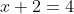
隐含着这样的问题：“什么加上二等于四？”答案当然是 2。所以这个方程在
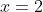
时成立。然而，假如我问下面方程的解是什么，答案就没那么明显了：
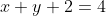
数学家看到这个方程的第一反应是想知道你在寻找什么样的答案。我们仅考虑正整数作为方程的解吗？那么该方程唯一的解是
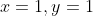
。如果解可以是非负整数（即包含 0），那么该方程还有两个解：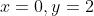
；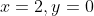
。如果解可以是负整数，那么该方程就有无穷多组解，比如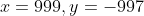
。如果解可以是有理数，那么该方程也有无穷多组解，比如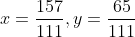
。当然，如果解可以是无理数或复数，那么该方程就会有更多的无穷多组解了。诸如此类，含有多个未知量并且可能出现无穷多组解（解的数量取决于所求的解的类型）的方程被称为不定方程。
最著名的不定方程是费马大定理（即费马最后定理）中出现的
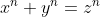
其中 、、 和  都是正整数。当
都是正整数。当
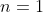
或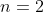
时，这个方程有无穷多组解。费马大定理称当 是大于 2 的正整数时，该方程没有正整数解。
1637 年左右，皮埃尔·德·费马（1607—1665）在阅读丢番图的《算术》（拉丁文译本）时突然想到了这个定理，于是他在该书的页边空白处留下了著名的注记，陈述了这个命题，然后（也是用拉丁文）补充道：“对此我已经发现了一个完美的证明，可是这里的空白太小，写不下。”实际上直到 357 年之后，这个定理才被安德鲁·怀尔斯（1953— ）证明。
※※※
如前所说，《算术》一书讨论的大部分内容是不定方程。而且丢番图还处于一个非常不利的境地，因为他只有一个表示未知量的符号（其他符号代表未知量的平方、立方等）。
为了了解丢番图是如何克服这个困难的，我们可以看看他对《算术》第 2 卷问题 8 的求解方法，费马就是在这个问题的空白处写下了他的著名注记。
丢番图叙述了这样一个问题：“把一个平方数分解成两个平方数的和。”如今，我们会把这个问题表述为：“给定一个数  ，求 和 ，使得
，求 和 ，使得
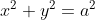
。”当然，丢番图没有我们这样的巧妙记法，所以他只能用文字来描述这个问题。为了解决这个问题，他首先令 是定值 4。所以我们要求满足
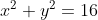
的 和 。然后他把 写成一个关于 的特殊表达式，看起来像是随意写的：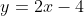
。于是，我们现在要解一个特殊的方程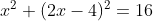
对丢番图来说，这个方程可以使用他的字母符号体系来表示。这正是一个二次方程，丢番图知道如何求解它，其解是
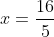
。（这个方程还有另一个解：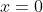
。因为丢番图没有表示零的符号，所以他舍弃了这个解。）于是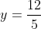
。这看起来似乎不会给人留下深刻的印象，事实上，这像是在骗人。方程 有无穷多组解，丢番图只得到一组解。不过，他采用了一种可以推广的过程得到了这个解，他在书中的其他地方也提到了这一点：他知道这个方程有无穷多组解。
※※※
之前我提到过，当数学家看到不定方程 时，他们的第一反应是问：你在寻找什么类型的解？在丢番图的方程中，他要寻找的是正有理数解，比如刚才求 所得到的解
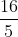
和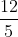
。那时人们还没有发现负数和零，所以丢番图说方程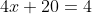
是“荒谬的”。当然，他知道无理数，但对它们不感兴趣。当这些数出现在某个问题中时，他会调整这个问题的条件，以便得到有理数解。寻找类似于丢番图处理的问题的有理数解，实际上等价于寻找与之密切相关的问题的整数解。等式
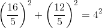
可以化为
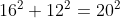
所以，现在我们使用“丢番图分析”表示“寻找多项式方程的整数解”。
※※※
也许读者仍然对丢番图求解方程 的过程不以为意。这里似乎没怎么展现出古巴比伦人的二次方程的解法和其他成就在 2000 年来的数学影响。
为了更公平地看待丢番图，我应该说：虽然那个特殊的问题很容易提出，但实际上丢番图解决的问题要比这道题难得多。方程 很好地说明了他的方法，这个方法与费马大定理有着有趣的联系，而且无须很长时间就能解释清楚。这就是为什么这个问题是一个受欢迎的例子。除此之外，丢番图还研究了有一个未知量的三次或四次方程，有两个、三个或四个未知量的联立方程组，以及一个等价于有 12 个未知量的 8 个方程的联立方程组的问题。
丢番图在解决方程 的过程中显示出他掌握了很多东西。比如，丢番图已经知道符号法则，他是这样描述的：
所需的（即负数）乘以所需的等于现成的（即正数），所需的乘以现成的等于所需的。
我之前提到过，在负数还没有被发现的情况下知道这个事实是非常了不起的！
事实上，“还没有被发现”需要一些附加条件。尽管丢番图没有将负数视作独立数学对象的概念，更不用说用符号表示它们，他也不认为负数是方程的解，但是他实际上在计算过程中使用了负数，比如，
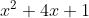
减去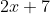
等于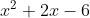
。很明显，虽然他认为将 -6 作为数学对象是“荒谬的”，但他在某种程度上知道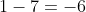
。正是这种情况让我们意识到数学思想的发展多么不自然。即使是负数这样的基本概念，数学家们也花了几个世纪才弄清楚，其间有很多类似上面所说的中间过程。大约 1300 年之后，在人们认识虚数时也出现了类似的现象。
丢番图知道如何从方程的一边向另一边“移项”，他在移项时改变了这些项的符号，他也知道为了化简如何“合并同类项”，还知道展开和因式分解等一些基本原理。
他对有理数解的执着还触及了很久之后的现代代数数论。如今，我们会说方程 是一个半径为 的圆的方程。在寻找这个方程的有理数解的过程中，丢番图提出了这样的问题：坐标 和 都是有理数的点在这个圆的什么位置？我们将在第 14 章中看到，这确实是一个非常现代的问题。
※※※
那么，丢番图是代数之父吗？我之所以愿意给他这样的荣誉称号，正是因为他的字母符号体系——用特殊的字母符号表示未知量、未知量的幂、减法和相等。当我第一次看到丢番图用自己的符号写出的方程时，我的第一反应可能和你一样：“他说的是啥？”不过，在看过他的一些问题之后，我很快就熟悉了他的字母符号体系，甚至能够不假思索地快速阅读丢番图的方程。
最终，我领悟到丢番图创造出的字母符号体系非常先进。我确实认同沃格尔所说的《算术》中缺少一般方法的观点，我也愿意承认丢番图在选题上缺乏原创性。也许他并不是第一个使用特殊符号表示未知量的人。
然而，由于历史的命运，最早把如此广泛、全面、富有想象力的问题集传给我们的是丢番图。遗憾的是，我们不知道谁是第一个使用符号表示未知量的人，但既然丢番图这么早就能如此熟练地使用符号来表示未知量，我们应该为此向他致敬。也许某一个我们不知道并且永远不会知道的人才是真正的代数之父。但是既然这个头衔空缺，我们不妨把它送给一个我们知道的最有资格的古代人，他的名字就是丢番图。